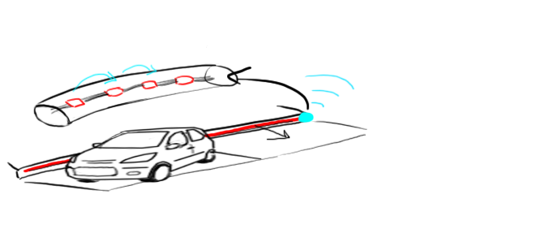
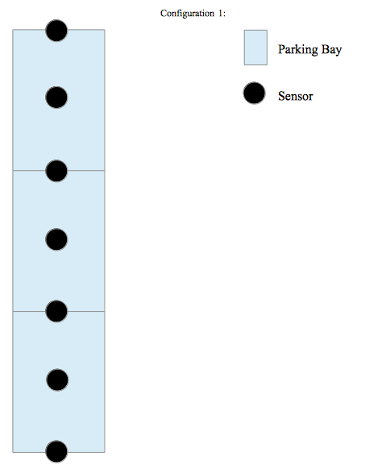

Network architecture Considerations (make into picture)
Ways to send data
There are many different ways to send data both wirelessly and wired. Through extensive research we narrowed it down to a few different ways.
WiFi
WiFi is a wireless technology that allows devices to connect to the Internet.
It uses the IEEE 802.11 protocol standards to transmit data.
The advantage of using a network like this one, is that it gives access to the Internet. This means that there is virtually no limit to the range of our devices.
The drawback of using WiFi is that it uses far more power than most other devices and would therefore not be suitable unless a sustainable power supply is provided.
Since our sensors will be placed on roads with no easy access electricity, Wifi will most likely not be the best way to transmit data.
One way WiFi will be useful however, is as a zone controller. All the data thats being transmitted between sensors can only send it to a local network, however WiFi will allow us to take that data and upload it to the internet.
The zone controller does not need to be placed on the road and can therefore be placed near a power supply along the street.
Bluetooth
Bluetooth is another way to transmit data wirelessly. Bluetooth uses short wavelength UHF radio waves to transmit its data and is used for local networks.
Its physical range can vary from 1-100 meters with its power supply varying with that.
With the new Bluetooth 4.0, you are no longer limited to 8 devices, making it a possible data transmission technology for our use case.
Its data rate is rather lower, but in our use case we are not transmitting large enough quantities of data for this to matter.
ZigBee
ZigBee is an alternative to Bluetooth, in that they serve similar roles. ZigBee is a low data rate, low power and lower range device designed for local networks.
It uses less power than Bluetooth, but its range is also lower.
Using a Serial cable
Using a Serial cable is a wired way of transferring data across a network. An obvious downside to this is the fact that the devices will have to be connected together.
If we decide to place our sensors on the actual parking bay, we would have to dig down these cables to to prevent them from being destroyed. This will drive up the cost of our system.
In the cases where our sensors are not directly on the parking bay, using a cable can be beneficial. It is by far the most reliable way to send data, with a decent range.
The range of cables vary with data rate as seen below:
| Data Rate (bps) |
Distance (m) |
|---|
| 2400 |
60 |
| 4800 |
30 |
| 9600 |
15 |
| 19200 |
7.6 |
| 38400 |
3.7 |
| 56000 |
2.6 |
As seen, the range is halved as the data rate is doubled.
Technical Data Comparison
|
WiFi |
Bluetooth 4.0 |
Bluetooth 3.0 |
ZigBee |
Wired Connection |
|---|
| Speed |
Fast |
Slow |
Normal |
Slow |
Fast |
| Range |
Unlimited |
~100m |
< 100m |
10-100m |
2.6-60m |
| Number of devices |
Wifi |
Bluetooth 4.0 |
Bluetooth 3.0 |
ZigBee |
Unlimited |
| Power Consumption |
~116ma |
< 30ma |
< 15ma |
< 9ma |
Low |
Final thoughts
Depending on the use case and kind of sensor we are working with, some protocols work better than other.
For our parking bay monitoring case we would use ZigBee for the wireless datatransmission, but we may decide to use wired if we use something like infrared.
We chose ZigBee over Bluetooth, because the range did not matter in this case and the lower power consumption is more beneficial.

This section will contain the research findings, by section. Sections may include:
- Existing Systems - Gulliver
- Hardware
- Software
- Environmental (looking at physical implementation
- Anything else... Go nuts
Potential sensors and their applications
This section details a variety of sensors and their potential use for object detection in relation to
the use case of 'parking/illegal parking'. What sensors we may use as hardware to support the use
case, how these would be configured in different environments, considerations and lastly, the
strengths and weaknesses associated with each have been documented below.
Approaches:
A | Light sensors/ Photodiodes as a method of object detection

By making use of these sensors, the general idea was to detect a 'spike' in the change of light
intensity. One potential configuration for these sensors can be seen below:
Detecting the presence of a vehicle would then be a matter of a change in sensor readings from a
high intensity to a low, indicating the sensor in question is covered by the shadow of a vehicle.
This approach alone however, may only be suited for indoor parking where the light source would
keep in near-constant levels, enough for a default state to be identified for 'bay unoccupied' which
changes in light intensity could then be matched against. Experimentation would have to occur in
order to test out how great the 'dip' from an object covering it from a range of specified heights
(taking into account car height which is lower for sport cars and higher for vehicles like off roaders)
and also the different width x lengths of said objects in order to determine whether this change is
great enough for object detection.
Depending upon their configuration in the environment of an indoor parking lot, the sensors could
potentially indicate the parking over two spaces instead of one. This would, however, require having
more sensors to be implemented.
 One consideration to be made here, with the configuration seen left, would
be whether one of the sensors placed between two parking bays is
accidentally covered by the shadow of a car parked in only one of the two
spaces resulting in a false reading of 'parking over two spaces'. This would
depend on where the light source is and also the height of the car, making
the extended detection of unethical parking unreliable and unfeasible.
One consideration to be made here, with the configuration seen left, would
be whether one of the sensors placed between two parking bays is
accidentally covered by the shadow of a car parked in only one of the two
spaces resulting in a false reading of 'parking over two spaces'. This would
depend on where the light source is and also the height of the car, making
the extended detection of unethical parking unreliable and unfeasible.
Out-door parking making use of these sensors during day-time might be possible, however, as
readings would be based upon the main light source of the sun, while gradual changes could be
handled – adjusting the sensors to sudden changes in weather and also keeping track of whether a
vehicle is above it or not is probably not feasible.
Alternatively, a secondary option would be using photodiodes for generating power for other
sensors instead. The key here would then be whether such a device could be powered solely by solar
power removing the need of installing a battery. Experimentation would need to be done to find out
how much power can be created using solar power sensors vs. how much the sensors we use
require. If we find that we can produce more power than consumed, then this might be viable.
B | Multiple infra-red sensors for object detection
One idea involves having a hose pipe with multiple, cheap IR sensors in it wired together and then
fastening this to the side of a pavement/ wall instead of having separate sensor units.

The range an infrared sensor can detect reliably can vary a lot. Ideally, a sensor that could read
reliably at a range of at least 80cm would be a candidate for detecting the presence of a vehicle. The
data transmitted would then be a 'YES/NO' binary signal based on whether the sensors' reading was
maxed out 'space unoccupied' or not 'space occupied' rather than the distance from the sensor to
the nearest object.
possible configurations for these sensors can be seen below:

As seen, there is both a sensor in the middle of the parking bay and one on each line between parking bays.
The ones in the middle are to simply detect if a car is occupying the bay or not.
The ones on the line are to monitor if a car is covering more than 1 parking bay and is therefore parked illegally.
Advantages of IR
- Wide variety of ranges (depending on product).
- Low power consumption
- Low cost
Disadvantages of IR
- Can not read values of 0cm range
- Power consumption higher than that of ultrasound
Possible sensors available on the market:
| Feature |
SHARP GP2D120XJ00F |
SHARP GP2Y0A02YK |
SHARP GP2Y0A21YK |
SHARP GP2Y0A710YK0F |
|---|
| Range |
4-30cm |
10-80cm |
10-80cm |
100-550cm |
| Power Consumption |
33-50mA |
33-50mA |
33-40mA |
33-50mA |
| Operating Voltage |
4.5-5.5V |
-0.3-7.0V |
0.4-3.1V |
4.5-5v5V |
| Cost |
$11 |
$16 |
$15 |
$16 |
C | Ultrasound as an alternative to Infra-red
There are some limitations with using Ultrasound.
If the object you are reflecting your sound wave off is at too wide of an angle, no sound wave will return to the device and a maxed out reading will be read.
This limits the configurations of this kind of sensor as the following is not possible for ultrasound, but possible for Infrared:
Alternative options would include placing the sensor directly below the car as appears convention.
Mounting the sensor units directly above car parking bays would work indoors as well. A kind of
lighting system may also be useful here, where motorists are indicated to which spaces are
'occupied' or 'unoccupied' via the lights 'RED' or 'GREEN' respectively.
Advantages of US
- low and high ranges possible on one device.
- Very Low power consumption.
- Can read values of 0cm ranges.
Disadvantages of US
- High cost
- Can not read values at an angle.
Possible sensors available on the market:
| Feature |
MaxSonar-EZ1 |
Parallax PING Ultrasonic Sensor |
SeeedStudio Ultrasonic Range Finder |
Devantech SRF05 Ultrasonic Range Finder |
|---|
| Range |
0-645cm |
2-300cm |
3-400cm |
1-400cm |
| Power Consumption |
2mA |
20mA |
15mA |
4mA |
| Operating Voltage |
2.5-5.5V |
5V |
5V |
5V |
| Cost |
$26 |
$30 |
$15 |
$28 |
D | Web camera
Algorithms for motion-detection combined with the use of a web camera mounted on a street light
for video capturing purposes was first considered. Given the high volume of data which would have
to be captured, stored then processed and the costs this would incur however, short, sporadic
capture every half-minute and analysing this data by way of setting up a ‘black box’ that carries out
calculations on the spot via machine learning was considered to have better potential.
This method would require the least sensor units, making it cheaper for this reason. Units would, however, have to be installed at an appropriate height from the ground to prevent vandalism for instance.
Again, how well this performs in the outdoor environment will have to be extensively tested.
Creating an algorithm capable of detecting cars would be the main challenge. Considerations must
be taken into how well such a sensor will perform under extreme weather conditions, light
conditions and during the night (visibility issues).
E | Photoelectric sensors (680px wide diagrams)
Who's doing this one? Johan?
F | Electromagnetic sensors / Inductive loops
Another method considered was the use of inductive coils. The change in inductance when a vehicle passes over a coil is what is measured to determine the presence of an object. In this case, it is the steel frame of vehicles that is acting as a remote sensor and detected as an electromagnetic material.
This method would involve placing the coils underground. Perhaps the greatest drawback of this method would be the fact that a large area would have to be cut into the ground to place these in and then sealed back up. There are costs associated with this and they cannot be instantly deployed. Ideally however, by following through with this, a long-lasting parking based sensor network can be built.
G | A net of pressure sensors
To be done by Gulliver

This section will contain the decisions we made as a consequence of the research.
Assigned to: Johan/Victoria

Article on Bluetooth 4.0:
http://pocketnow.com/2013/05/22/bluetooth-4-0-devices
This article talked mostly about wearable bluetooth devices, but gave a good introduction to Bluetooth.
Article on the usefulness of Bluetooth 4.0:
http://www.cnet.com/uk/news/the-power-of-bluetooth-4-0-itll-change-your-life/
This article talked specifically about why bluetooth 4.0 was better than 3.0 and how it was going to change the world.
Article on Wifi:
http://www.webopedia.com/TERM/W/Wi_Fi.html
This article talks about what Wifi is and its uses.
Article on London Underground smart sensors:
http://www.bbc.co.uk/news/technology-27716534
Picture shows an example of camera sensors looking at dots on a picture and their movement to determine the movement of the tunnel under construction.
Article on the London underground's internet of things:
http://www.fastcolabs.com/3030367/the-london-underground-has-its-own-internet-of-things
Another article on the underground and about the sensors that can be found.
Article on high tech sensors in the post office rail tunnel:
http://www.theengineer.co.uk/civil/news/post-office-rail-tunnel-turned-into-high-tech-sensor-lab/1018746.article
Article explains how they monitor ground movements to avoid tunnels from collapsing.
Article on contact-less credit cards:
http://www.tfl.gov.uk/fares-and-payments/contactless
This article talked about the new card reading sensors used by the underground.
Wikipedia page on Bluetooth:
http://en.wikipedia.org/wiki/Bluetooth_low_energy
Looking more specifically at the table comparing old Bluetooth to new.
Website for a sensor network company:
http://senseable.mit.edu/wef/
An example of existing services similar to what we are creating
Report on sensor applications:
http://www.urenio.org/wp-content/uploads/2012/05/Libelium_50_sensor_applications.pdf
This report has a lot of interesting idea that we ended up considering.
Pollen sensor:
http://www.shinyei.co.jp/stc/optical/poln/main_poln_e.html
An example of a pollen sensor that we considered using.
Article on London becoming a city of sensors:
http://www.forbes.com/sites/federicoguerrini/2014/06/08/how-london-is-quietly-becoming-a-city-of-sensors/
This talks about the future of London and how sensors will change it.
Air pollution project:
http://communitymaps.org.uk/version6_1/includes/MiniSite.php?minisitename=Science%20in%20the%20City%20-%20Barbican%20Air%20Quality&minisite_group=
This project mapped the pollution levels in a given area.
Noise pollution project:
http://services.defra.gov.uk/wps/portal/noise/maps
This project mapped the noise levels of roads in London.
Article on the future of the internet and sensors:
http://web.archive.org/web/20130729210642id_/http://itc.conversationsnetwork.org/shows/detail5327.html
Talks about how sensors will change the internet.
Website for buying sensors:
http://www.sensorland.com/
Has a massive catalog of sensors of all kinds.
Light painting WiFi:
http://vimeo.com/20412632
Project video for mapping wifi levels in an area.
Spy cars using camera as sensor:
http://www.dailymail.co.uk/news/article-2664240/Outlawed-The-spy-cars-automatically-issue-parking-fines-totalling-300million-protest-privacy-campaigners.html
This article talks about the banning of having a manned car use a camera to monitor illegal parking.
Article on parking bay sensors
https://www.westminster.gov.uk/parking-bay-sensors
Talks about the already existing system for monitoring parking bays.
BBC article on ParkRight app:
http://www.bbc.co.uk/news/technology-25727117
Talks about the council of westminster rolling out more parking sensors.
Article on the launch of the ParkRight app:
http://www.telegraph.co.uk/technology/news/10573651/Smart-parking-app-begins-rollout-in-Londons-West-End.html
More information about the app for monitoring parking bays.
Proximity sensor for bus drivers:
http://www.mayorwatch.co.uk/london-buses-to-trial-anti-collision-sensors/
This article talks about a sensor that will tell the bus driver if a cyclist is getting too close to the side of the bus.
Article on cycle safety sensors and free wifi in buses:
http://www.london24.com/news/transport/london_buses_to_get_free_wifi_and_cycle_safety_sensors_1_3715688/
More information about the cyclist sensor attached to buses.
Another article on bus sensors:
http://www.standard.co.uk/news/transport/london-buses-to-have-sensors-in-bid-to-cut-cyclist--and-pedestrian-deaths-9225835.html
Talks about their usage for both pedestrians and cyclists.
Article on wireless sensor tags:
http://www.itpro.co.uk/asset-management/22957/mini-wireless-sensors-to-help-smartphones-monitor-household-items
this article talks about mini-wireless sensors that you can use to tag objects
Switchedon project:
http://www.whitewing.co.uk/switchedon.html
talks about tracking people walking across london bridge via bluetooth detection.
AirSensa project (Oct 2014):
http://www.irishpost.co.uk/news/irish-businessman-funds-london-schools-air-quality-sensors-project
Talks about air quality sensors in schools.The basic ideas is to fit air-quality sensors in schools -- and collect this data so it can be made use of to reduce carbon emissions and improve London's air quality.
Sensor Networks for Air Quality @ HEATHROW (2011)
http://www.snaq.org/
Website for a company setting up air quality sensors in Heathrow airport.
CISC (Smart Infrastructure and Construction) (july 2014):
http://www.theengineer.co.uk/civil/news/post-office-rail-tunnel-turned-into-high-tech-sensor-lab/1018746.article
Talks about attaching sensors to tunnels to monitor the effects nearby construction will have.
( (e.g. will the current tunnel's supporting cast iron material hold? will it move? (can be dangerous))
Website on photodiodes:
http://hyperphysics.phy-astr.gsu.edu/hbase/electronic/photdet.html
Talks about what it is and how it works.
Website on infrared:
http://www.darvill.clara.net/emag/emaginfra.htm
Talks about what it is and its uses in real life applications.
Article on web-camera sensor:
http://lifehacker.com/320580/turn-your-webcam-into-a-motion-sensing-security-camera-with-yawcam
talks about how to turn your web-camera into a motion sensor
article on how ultrasonic sensors work:
https://www.teachengineering.org/view_lesson.php?url=collection/umo_/lessons/umo_sensorswork/umo_sensorswork_lesson06.xml
Shows in great detail exactly how ultra sound works and how it can be used as a sensor.
Arduino Mega specifications:
http://arduino.cc/en/Main/arduinoBoardMega
Summary of the features of the Arduino Mega board.
Arduino website:
http://arduino.cc/
website used for many of our tutorials to setting up our arduino.
Ultrasound tutorial:
http://arduino.cc/en/Tutorial/Ping?from=Tutorial.UltrasoundSensor
Tutorial on using Ultrasound with the Arduino
Pins digital vs analog:
http://forum.arduino.cc/index.php?topic=69216.0
talks about the difference between analog and digital pins.
specifications bluetooth:
https://www.sparkfun.com/products/12576
These are the specifications for the bluetooth device used in our prototype.
Specifications Ultrasonic Sensor:
http://www.robot-electronics.co.uk/htm/srf05tech.htm
These are the specifications for the Ultrasonic device used in our prototype.
Rx vs Tx:
https://answers.yahoo.com/question/index?qid=20081006214718AAlmOAZ
Explains the difference between Rx and Tx.
Bluetooth basics research:
https://www.youtube.com/watch?v=sXs7S048eIo
A YouTube tutorial on the basics of setting up a Bluetooth device with the Arduino.
Specifications on the Raspberry Pi B+:
http://www.raspberrypi.org/products/model-b-plus/
These are the functions and specs of the Raspberry Pi B+, which we considered using.
Definition on network protocols:
http://compnetworking.about.com/od/networkprotocols/g/protocols.htm
This article talks about the different types of protocols for networking.
ZigBee's website:
http://zigbee.org/
The website has a lot of information on what Zigbee is and its uses.
Contiki OS
http://www.contiki-os.org/
This is an operating system made for sensor management.